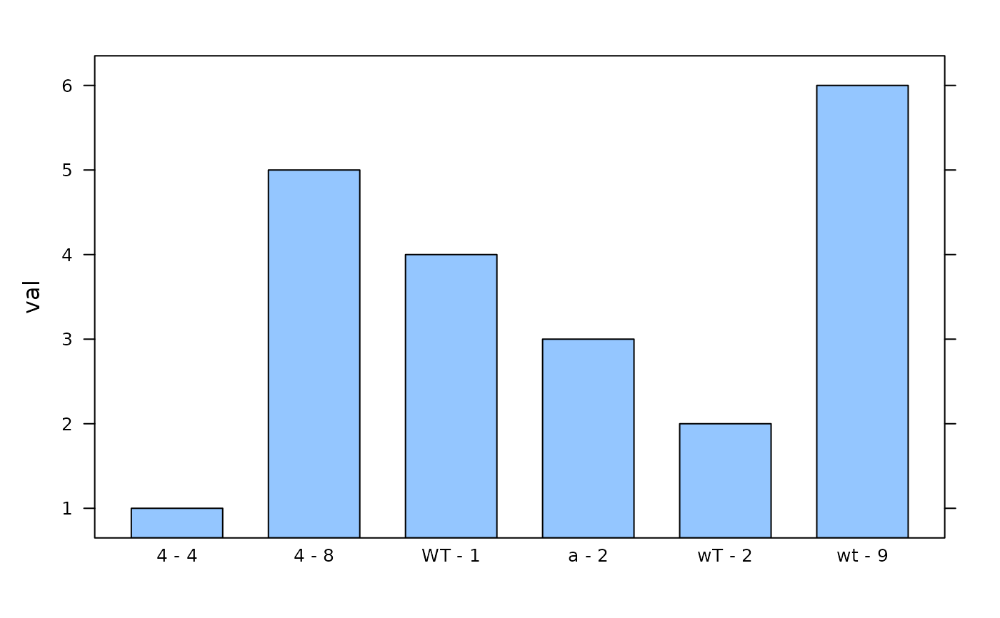
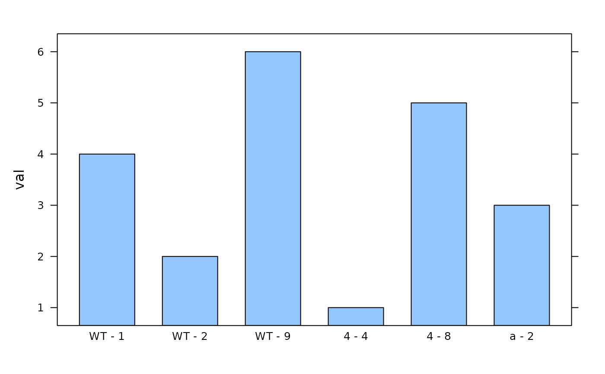

Convert ID column to a factor with a suitable ordering
factorize_id_column.RdConverts an ID column to a factor with a suitable ordering. In particular,
this function will ensure that any IDs beginning with WT (or any
other capitalization) will be ordered before other values. This is helpful
when plotting results according to genotype.
Usage
factorize_id_column(x, ...)
# S3 method for character
factorize_id_column(x, ...)
# S3 method for data.frame
factorize_id_column(x, id_column_name, ...)
# S3 method for exdf
factorize_id_column(x, id_column_name, ...)Arguments
- x
Object to be ordered.
- id_column_name
When
xis adata.frameorexdf, this argument specifies the column within the table that should be ordered.- ...
Additional arguments (currently unused).
Value
factorize_id_column.character returns the character vector as a
factor with an appropriate ordering.
factorize_id_column.data.frame and factorize_id_column.exdf
return a copy of the original table, where one column (specified by
id_column_name) has been converted to a factor with an
appropriate ordering.
Details
To choose an ordering, each unique identifier is split into three components:
an initial WT (if present), a final numeric value, and any other
content in between these two. Then, the identifiers are sorted according to
these three values, in order of WT -> other content -> numeric value. Note
that initial WT values will be converted to WT regardless of
their capitalization.
This system works well with identifiers that represent genotypes/events, or that combine genotype/event with a replicate number.
Examples
# Identifiers that represent genotypes
genotype_ids <- c('4', 'WT', '2', 'Wt', '8')
factorize_id_column(genotype_ids)
#> [1] 4 WT 2 WT 8
#> Levels: WT 2 4 8
# Identifiers that represent `genotype - replicate` values
replicate_ids <- c('4 - 4', 'wT - 2', 'a - 2', 'WT - 1', '4 - 8', 'wt - 9')
factorize_id_column(replicate_ids)
#> [1] 4 - 4 WT - 2 a - 2 WT - 1 4 - 8 WT - 9
#> Levels: WT - 1 WT - 2 WT - 9 4 - 4 4 - 8 a - 2
# Data frame
dat <- data.frame(replicate_id = replicate_ids, val = seq_along(replicate_ids))
# Display data in bar chart - note the order of the replicates
lattice::barchart(val ~ replicate_id, data = dat)

# Display factorized data in bar chart - note the order of the replicates
lattice::barchart(val ~ replicate_id, data = factorize_id_column(dat, 'replicate_id'))

# Extended data frame
exdf_obj <- exdf(dat, units = data.frame(replicate_id = '', val = 'm / s'))
exdf_obj <- factorize_id_column(exdf_obj, 'replicate_id')
exdf_obj[, 'replicate_id']
#> [1] 4 - 4 WT - 2 a - 2 WT - 1 4 - 8 WT - 9
#> Levels: WT - 1 WT - 2 WT - 9 4 - 4 4 - 8 a - 2